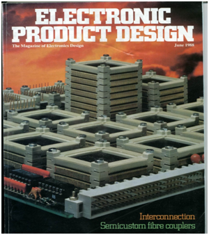

Around 30 years ago there was an unusual project involving Dowty, Inmos, Cambridge University and a range of other players which became known as 'Chiprack'. It sparked considerable excitement at the time when it won a number of awards and so it seemed timely to have another look. In addition a pile of debris from the project has recently come to light and prompted this return to examine some of the ideas behind the project in the light of recent developments.
Chiprack was, in essence, a modular two or three dimensional communications framework for supporting and interconnecting arrays of large scale circuits or modules. There were a number of papers published at the time that covered the background and progress of the project and these are given as references at the end of this update.
The project demonstrated a route to building products without using traditional PCB construction to interconnect large scale circuits or modules and to the substantial benefits that can accrue.
One of the objectives of the project was to facilitate the recycling and reuse of electronic sub-assemblies (as functional electronic units). Chiprack was designed to make the electronics part of products easy to assemble and to disassemble by simply attaching the sub-assemblies onto the communications framework to create products. The use of a frame to spatially separate electronic sub assemblies is seen as essential as a step to enable the reuse, replacement or upgrade of functional electronic sub assemblies attached to the frame.
At that time, this was ultimately seen as commercially undesirable with rapid obsolescence seen as a route to maximising profit growth. Times change, and with mounds of electronic waste starting to cause concern it occurred that it may be useful to revisit this problem with a growing need to address ease of repair, upgrade, disassembly and eco friendly re-deployment in mind.
The project also demonstrated methods by which functional electronic units from products could be redeployed into new products with the use of programmable logic to re-arrange required connection paths and implement any required interface circuitry (effectively this represented the software reconfiguration of the hardware units into new products).
This second theme related to the first. In order to make products easy to assemble and disassemble the communications framework required a modular mechanical element to hold and interconnect the sub-assemblies. Chiprack employed rectangular mechanical frames to hold and interconnect the electronic sub-assemblies. At that time this required a large number of mechanical contacts to accommodate the large number of signal paths between bus connected sub-assemblies. Despite extensive successful shock and vibrational testing the large number of contacts was seen as a major weakness. Again times change and the extensive use of high speed electronic, wireless or optical serial links have replaced many of the old parallel bus style communications. Interrogation of added circuitry via serial links can now facilitate identification of functional units and then their application or role within a product. Again it occurred it may be timely to revisit this theme in the light of high speed mechanical, optical and wireless serial communications and the wide availability and application of field programmable electronics.
One of the Chiprack prototypes that generated most interest at the time involved a three dimensional array of Transputers (in the heady days of Inmos the British semiconductor manufacturer !!). The Transputers were coupled into three dimensional arrays using the Chiprack mechanical structures and they then communicated using the high speed serial Transputer links, This reduced the problem of parallel bus communications with the use of the high speed serial links while still retaining the ability to easily repair, expand or disassemble the modular three dimensional structure.
At the same time a team at Bristol University also demonstrated the use of high speed optical links to link Chiprack precision aligned mounted sub-assemblies. Different frequencies of light generating a span of communication channels.
The electronics waste stream is becoming increasingly problematical. As with other waste streams the ability to be able to recycle or reuse sections of this waste stream is a partial and eco friendly solution. Three problems bedevil this approach for current electronic products. The first is that it is difficult or impossible to extract useable blocks of electronics from products (disassemble products) and the second is that it is also difficult or impossible to incorporate additional blocks of electronics into products to update or repair the product. Finally the construction of new products from usable electronic modules is difficult because of the non standard communications 'framework' (usually a PCB) used to connect circuits or modules together.
Replacement of the custom designed PCB with a standardised communications framework was also identified as a route to reduce manufacturing costs by eliminating the need for expensive pick and place assembly methods necessary to populate the variable geography of the PCB
So if we now reflect back to the Chiprack project it is possible to consider that it adopted the communications 'framework' as the central standardised hardware support and interconnection element with the electronic circuitry physically or dynamically adapting to communicate over the framework. The Chiprack project demonstrated that it is possible to design a modular standardised hardware support and communications framework with assembly and disassembly in mind and also for construction of flat or three dimensional structures .
It then becomes possible to envisage this standardised modular hardware framework carrying power and facilitating complex high speed serial electrical, wireless or optical communications. Large scale circuits or modules can then be attached to the framework where they will be identified and then configured by software into the desired product configuration.
So what would be new that is not already available. Certainly not designing electronic modules which physically link together into products - numerous examples exist (e.g. dense pac). Certainly the idea of disparate electronic blocks configuring and adapting to a standardised communications framework is not new. We have the internet at a worldwide level! Finally also not new is the use of high speed serial electrical, wireless or optical communications used to discover and interconnect functional electronic blocks. Modern computer systems discover, connect and use a wide variety of hardware units over high speed serial connections (e.g. over USB)
What may be new and useful , in the light of the Chiprack project, may be to consider how some of these ideas may be combined and then usefully designed into future products. Products have traditionally been considered as independent functional electronic units that connect onto a range of communications networks or frameworks. Perhaps we could refocus our attention onto the communications framework and consider the opportunity for the new marketable item to be an intelligent communications framework. Then functional, add on, replaceable electronic units modules or sub-assemblies) could be mounted onto the intelligent framework which would then identify the electronic units and then sculpt the product functionality.
So finally what may be possible given current 'state of art'. The initial purchase of hardware would not be functional electronic units but the modular communications hardware elements, building into an intelligent support and communications 'framework', which could be two or three dimensional. This supporting modular communications 'framework' could be made of extensible elements or preconfigured. This intelligent 'framework' could then be turned into a first product, or range of products, by the mounting of electronic modules which would identified by ‘framework’ software and then configured into the initial 'product/s'. Interconnections within the 'product' would largely be implemented and reconfigured by means of programmable electrical, wireless or optical serial communications. Communications with the external world could occur via appropriate electrical, wireless or optical communications used within the product. The 'product' could then be easily repaired, modified or expanded with further electronic modules deployed onto the intelligent communications 'framework'. At end of initial 'product' life the existing functional modules could be removed from the framework for redeployment and new modules could be added to the intelligent communications 'framework' which would then recognise the modules and reconfigure to create a new 'product'.
Parallelogram Mar 88, Publication, 'Transputer Sandwiches'
http://www.virtualworkgroups.com/PDFs/transputerSandwich.pdf
http://www.virtualworkgroups.com/PDFs/transputerComp.pdf
INTERNATIONAL CONFERENCE ON HIGH PERFORMANCE ELECTRONIC PACKAGING Conference Paper Nov 90 , Proced 80-89, published by IEE & Welding Institute, 'Partitioning, a Key to Automated Assembly'
EUPAC '94 7th INTERNATIONAL CONFERENCE 'INTERCONNECTION TECHNOLOGY IN ELECTRONICS, Essen, Germany 1-3 February 1994, Conference Paper, 'Chiprack Project - A Report on Progress' - Published as ISBN 3-87155-463-4, co-author with D.M. Holburn, D.S.Jordan, C.E. Hawkins (Cambridge University) http://www.virtualworkgroups.com/PDFs/chiprackProject.pdf
INTERNATIONAL CONFERENCE ON ASIC, Beijing, China, 1994, Conference Paper, 'A Novel Approach to the Problem of Partitioning Highly Integrated VLSI Systems' Proced. 137-140, co-author D.M. Holburn, D.S. Jordan, C.E. Hawkins (Cambridge University)
http://www2.eng.cam.ac.uk/~dmh/chiprack/chiprack.html
INTERNATIONAL CONFERENCE ON CLEAN ELECTRONICS, Edinburgh, 9-11 Oct 1995, Conference Paper, 'A Novel Architecture to Facilitate Disassembly and Reuse of Electronic Components and Sub-Assemblies', Proced. 214-217, publ IEE & IEEE, co-author D.M. Holburn, D.S. Jordan, C.E. Hawkins (Cambridge University)
http://www.virtualworkgroups.com/PDFs/cleanElec.pdf
EUPAC '98, INTERNATIONAL CONFERENCE 'INTERCONNECTION TECHNOLOGY IN ELECTRONICS, Nuremberg, Germany June 1998,
'Direct Chip Interconnection', co-author D.M. Holburn (Cambridge University)
Original Chiprack video clip
https://youtu.be/x9xmIIPmJVc
Dowty heritage web site
https://www.dowtyheritage.org.uk/content/dowty-group/electronics/ultra-electronic-components-loudwater